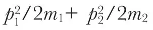
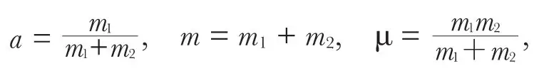
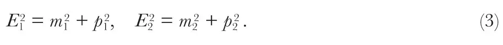
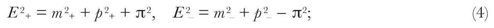
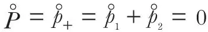
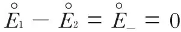
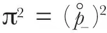

中文
中文M. Born and K. Fuchs
Editor’s Note
Part of the interest of this paper is its authorship. Max Born was a German émigré to Britain, awarded a Nobel Prize in 1954 for his work on quantum mechanics, while Klaus Fuchs was also a German exile working as a physicist in Britain. Fuchs afterwards joined the Manhattan Project at Los Alamos, New Mexico, and was later convicted by the British government of espionage on behalf of the Soviet Union; he working in Berlin after serving a prison sentence. The point of their paper was to show that, despite appearances, relativity can deal well with the centre of mass of a collection of particles. 中文
THE question whether there exists in relativity mechanics a theorem analogous to the classical law for the motion of the mass centre (conservation of total momentum) has, as far as we can see, never found a satisfactory answer. Eddington1 has taken this fact as the starting point for a general attack against the usual application of wave mechanics to fast-moving particles without contributing himself anything positive to the question. The reason why this problem has never been seriously treated seems to be this. 中文
In classical mechanics the internal potential energy depends on the simultaneous relative positions of the particles; therefore one can separate the relative motion from the translatory motion of the centre. In relativity, however, all forces are retarded, the interaction does not depend on simultaneous relative positions and the separation of the relative motion from the translation of the whole system loses its meaning. 中文
Quantum mechanics circumvents this problem by considering interactions as produced by emission and reabsorption of other particles. We were induced to reconsider this problem by its bearing on a relativistic and “reciprocal” formulation of second quantization. Without touching this question, we shall state here some simple results concerning free particles. It is clear that in this case there must exist a “rest system” Σ°, that is, a Lorentz frame in which the total momentum vanishes. The problem is to describe the relative motion in an invariant way. 中文
We start by bringing the classical derivation into a form permitting generalization. If r1, r2 are the position vectors, p1, p2 the momenta of two particles, we form the vector of relative position and that of total momentum
 = r1 − r2, P = p1 + p2
= r1 − r2, P = p1 + p2
(1)
and determine their canonical conjugate variables’ components of the vectors π and R. A simple calculation shows that these are not uniquely determined but have the form
π = (1 − a) p1 − ap2, R = ar1 + (1 − a) r2,
(2)
where a is an arbitrary constant. Hence another condition must be added. 中文
We postulate that the kinetic energy

assumes the form P2/2m+ π2/2μ. This condition leads to a determination of the three constants a, m, μ, namely,
which introduced into (2) give the usual expressions for relative momentum and centre of mass. 中文
In relativity, the energies E1, E2 of two free particles are given by

We consider now the 4-vectors p+ = p1 + p2, E+ = E1 + E2 and p– = p1 − p2, E– = E1 − E2. A simple calculation leads to

here m+= m1 + m2, m– = m1 – m2
and
π = 2m1m2 sinh Γ/2,
(5)
where Γ is the “angular distance” of the two 4-vectors, given by
m1m2 cosh Γ= E1 E2 − p1p2.
(6)
Γ is invariant, hence π is invariant also. π has a simple meaning in the case of equal masses. In the rest system Σ°, where

, we have m1 – m2 = m– =0, and
; hence
. This shows that π is the length of the vector π representing relative momentum. 中文
For different masses π can be described as the relative momentum in that Lorentz frame (which always exists) in which
E1−E2= ±(m1−m2).
The first equation (4) can now be written
E2 = M2 + P2, M2= μ2 + π2,
(7)
Where μ = m1 + m2 is the sum of the rest masses, M the total internal energy, which represents also the rest mass of the whole system, and P = p+ = p1 + p2 the total momentum. 中文
Taking the components of P and π as new canonical momenta, one can determine the conjugate coordinates, R and . They are linear in r1, r2; the coefficients are, however, not constants but functions of p1, p2. 中文
For small p1, p2 the formulae reduce to the classical ones. 中文
It is interesting to remark that in relativity there exists a “reciprocal”2 theorem obtained by interchanging coordinates and momenta. 中文
(145, 587; 1940)
Max Born and Klaus Fuchs: Department of Applied Mathematics, University of Edinburgh.
References:
1. Eddington, A., Proc. Camb. Phil. Soc., 35, 186 (1939).
2. Born, M., Proc. Roy. Soc. Edinburgh, (ii), 59, 219(1939).